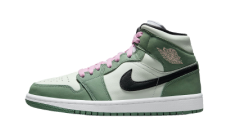

Os melhores em um só lugar
A marca Jordan na JordanShoes é a escolha certa para os amantes de sneakers que buscam estilo e conforto
Voltar

Nome do Produto
Descrição
R$ Preço
Tamanho
38 até 51
Inspirado no AJ1 original, essa edição cano médio mantém o visual icônico que você ama, enquanto a escolha de cores e o couro conferem uma identidade distinta.
Benefícios
- Cabedal em material genuíno, sintético e tecido para sensação de suporte.
- Entressola de espuma e amortecimento Nike Air proporcionam conforto e leveza.
- Solado de borracha com ponto de giro cria tração duradoura.
Calcular frete e entrega
Calcule o frete e o prazo de entrega estimados para a sua região!